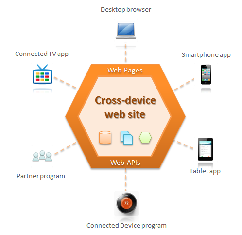
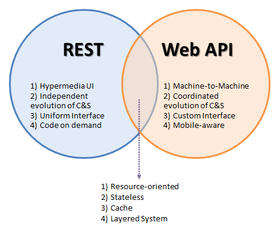

The Web API architecture style is an hybrid style derived from both the REST and the RPC styles.
TBD
This document is a working draft. Comments can be submitted via the issue tracker of the GitHub project and discussed via the API-Craft and the REST-Discuss mailing lists.
Web APIs are designed for systems that are both distributed and driven by machine-to-machine interactions. The Web API style is the result of the evolution of pragmatic development practices since 2000, starting with the emergence of Web Services (WS-* and *-RPC) and then the strong influence of the REST style towards more simplification and proper usage of HTTP as an application level protocol rather than a lower-level transport protocol.
By combining the power of REST (the web of documents) and of Web APIs (the programmable web), we can build a new generation of web sites that are inherently cross-device. as illustrated below.
Those web sites let organizations of all sizes provide a pervasive and contextual access to their information and services, to both customers, employees and partners via potentially any kind of machine.
Cross-device web sites illustrate the strategic value brought by Web APIs in this new era of internet mobility.
Starting with the Null style, we will add constraints to obtain the desired Web API style and explain the resulting properties.
Identical to the REST style.
Identical to the REST style.
Identical to the REST style.
As you can see the Web API style has been very much influenced by REST and share many of its constraints. This influence over 10 years has resulted in key simplifications compared to the original RPC style to make it more aligned with the core Web concepts such as resources, URIs, representations and the HTTP protocol.
There is no reason to oppose both styles as they are not solving the same problems, even though they are both deeply connected with the Web. The figure below represents their main differences.
Both styles are complementary and can be used together, for example when building a single page web application where the main HTML is loaded through a regular web page (REST style), including some JavaScript (code on demand constraint). This code is then interpreted by the web browser to make AJAX calls back to a Web API, exchanging predefined JSON representations.
Let’s also mention hyperdata as a second form of hypermedia with hypertext, that also offers a comprehensive application of REST. This is the world of the Semantic Web and especially the pragmatic Linked Data movement based on RDF and related media types such as Turtle, JSON-LD or HAL.
In other situations, where the client isn’t a web browser but a native mobile app, a connected device or a program written by a partner to integrate your web site with their own, you only rely on the Web API style, which is fine again. Let’s now step back and see where these new forms of web architectures will lead us.
TBD